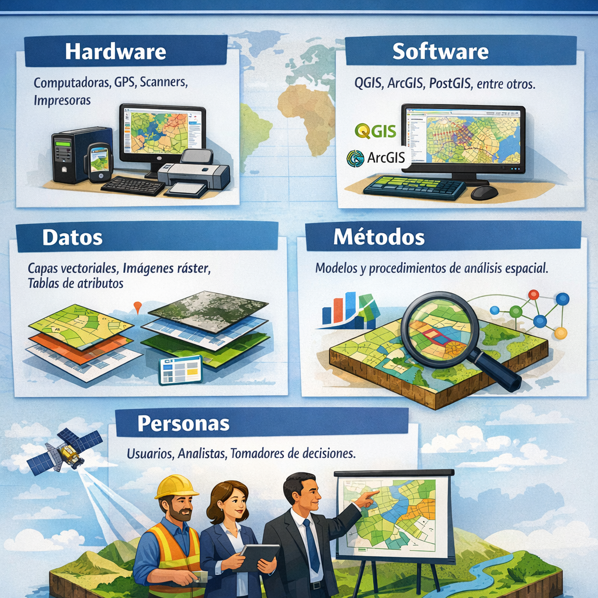
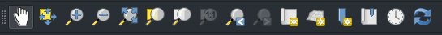
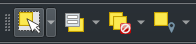
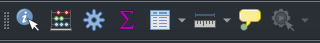
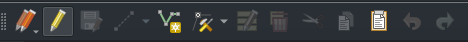
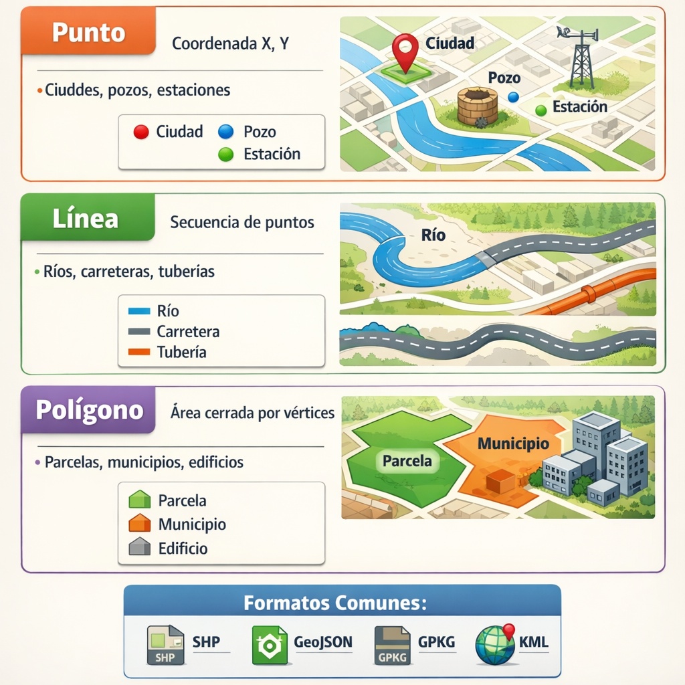
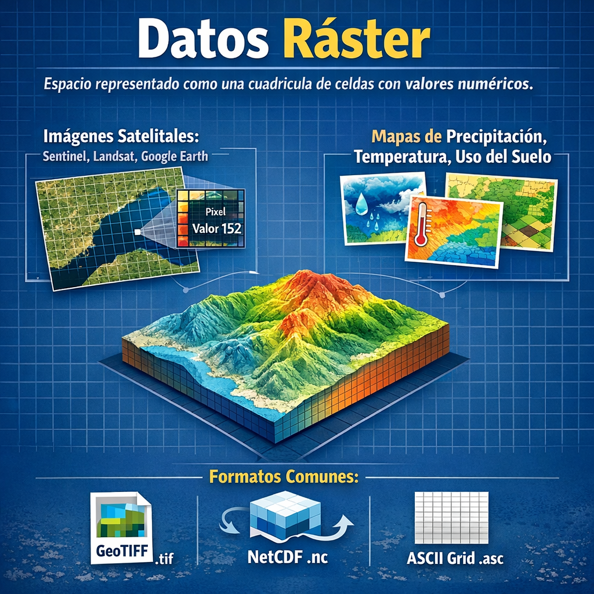

Módulo 1: Introducción a QGIS y SIG
1 Objetivos del Módulo
Al finalizar este módulo, los participantes podrán:
- Explicar qué es un Sistema de Información Geográfica (SIG) y sus aplicaciones prácticas.
- Identificar las ventajas de QGIS frente a otras plataformas SIG.
- Navegar con fluidez por la interfaz de QGIS.
- Distinguir entre datos vectoriales y ráster.
2 ¿Qué es un SIG y para qué sirve?
Un Sistema de Información Geográfica (SIG) es un sistema informático diseñado para capturar, almacenar, manipular, analizar, gestionar y presentar datos espaciales o geográficos.
2.1 Componentes de un SIG
| Componente | Descripción |
|---|---|
| Hardware | Computadoras, GPS, scanners, impresoras |
| Software | QGIS, ArcGIS, PostGIS, entre otros |
| Datos | Capas vectoriales, imágenes ráster, tablas de atributos |
| Métodos | Modelos y procedimientos de análisis espacial |
| Personas | Usuarios, analistas y tomadores de decisiones |

2.2 Aplicaciones prácticas
Los SIG se utilizan en una amplia variedad de campos:
- 🏙️ Planificación urbana: diseño de infraestructuras y servicios
- 🌿 Medio ambiente: monitoreo de recursos naturales y cambio climático
- 🚛 Logística y transporte: optimización de rutas y flotas
- 🏥 Salud pública: análisis epidemiológico y cobertura de servicios
- 🌾 Agricultura: gestión de cultivos y análisis de suelos
- 🔒 Seguridad: análisis de incidentes y cobertura policial
3 Ventajas de QGIS como plataforma de código abierto
QGIS (anteriormente Quantum GIS) es la plataforma SIG de escritorio de código abierto más utilizada en el mundo.
- Gratuito y de código abierto: sin costos de licencia
- Multiplataforma: disponible para Windows, macOS, Linux y Android
- Comunidad activa: miles de contribuidores y usuarios en todo el mundo
- Extensible: más de 1,000 plugins disponibles
- Estándares abiertos: compatibilidad con formatos OGC (WMS, WFS, WCS)
- Integración con Python: automatización mediante PyQGIS
3.1 Comparativa entre QGIS y ArcGIS
| Característica | QGIS | ArcGIS |
|---|---|---|
| Costo | Gratuito | De pago |
| Código abierto | ✅ | ❌ |
| Plataformas | Win/Mac/Linux | Windows |
| Extensibilidad | Alta | Alta |
| Comunidad | Muy activa | Activa |
| Integración Python | Nativa | Nativa |
4 Interfaz de QGIS: paneles, capas, consola, herramientas
4.1 Pantalla principal de QGIS
La interfaz de QGIS está compuesta por los siguientes elementos principales:
{kind=link}
4.2 Paneles principales
- Panel de Capas (Layers Panel): gestión y orden de las capas del proyecto
- Panel del Explorador: navegación de archivos y fuentes de datos
- Barra de Herramientas: acceso rápido a funciones comunes
- Vista del Mapa (Map Canvas): área de visualización geoespacial
- Barra de Estado: información sobre la escala, coordenadas y sistema de referencia de coordenadas (CRS)
- Barra de Herramientas Lateral: contiene botones para cargar capas y crear nuevas capas
- Barra de Localización: herramienta de búsqueda rápida para acceder a capas, entidades, algoritmos, marcadores espaciales y otros objetos de QGIS desde un único lugar.
4.3 Herramientas esenciales

{kind=link}

{kind=link}

{kind=link}

{kind=link}
Puedes activar o desactivar paneles desde el menú Configuración → Paneles y las barras de herramientas desde Configuración → Barras de herramientas.
5 Tipos de datos espaciales: vectoriales vs ráster
5.1 Datos vectoriales
Los datos vectoriales representan objetos geográficos mediante geometrías definidas matemáticamente:

5.2 Datos ráster
Los datos ráster representan el espacio como una cuadrícula regular de celdas (píxeles), donde cada celda tiene un valor numérico:

5.3 ¿Cuándo usar cada tipo?
| Criterio | Vectorial | Ráster |
|---|---|---|
| Objetos discretos | ✅ Ideal | ❌ Menos natural |
| Fenómenos continuos | ❌ Más complejo | ✅ Ideal |
| Edición de geometrías | ✅ Fácil | ❌ Difícil |
| Cálculo de áreas | ✅ Preciso para polígonos | ✅ Posible según resolución |
| Análisis de terreno | ✅ Posible con TIN/contornos, requiere modelado | ✅ Natural para DEM y derivados |
| Tamaño de archivo | Menor para objetos discretos | Mayor según resolución |
Nota: en GIS, “superficie” puede referirse al cálculo de áreas de polígonos o al modelado de la superficie del terreno. El vector es ideal para calcular áreas y manejar geometrías discretas; el ráster es más natural para representar un DEM y derivar pendiente, aspecto, cuencas o volúmenes.
6 🛠️ Ejercicio Práctico
6.1 Ejercicio 1.1: Exploración de la interfaz de QGIS
- Abre QGIS en tu computadora.
- Familiarízate con los paneles y herramientas principales.
- Activa/Desactiva el panel del Explorador (Configuración → Paneles → Explorador).
- Activa/Desactiva la barra de herramientas de Atributos (Configuración → Barras de herramientas → Atributos).
- Localiza la Consola de Python en el menú Complementos → Consola de Python y ábrela para verificar que PyQGIS está disponible.
6.2 Ejercicio 1.2: Identificar tipos de datos
- Descarga el dataset de ejemplo desde la página de QGIS.
- Carga capas de los tres tipos (punto, línea, polígono).
- Examina la tabla de atributos de cada capa (clic derecho → Abrir tabla de atributos).
- Identifica el sistema de referencia de coordenadas (CRS) de cada capa.
7 📚 Recursos y Referencias
Asegúrate de tener QGIS instalado y funcionando correctamente antes de la sesión 2.
- Revisa la documentación oficial de QGIS:
- Si tienes dudas o sugerencias sobre el curso, siéntete libre de publicar un issue en el repositorio del curso:
- También puedes usar las GitHub Discussions del repo para preguntas, ideas de mejora o comentarios generales: